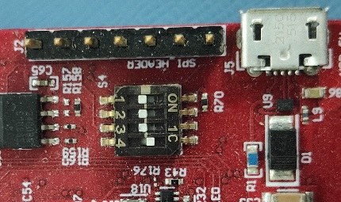
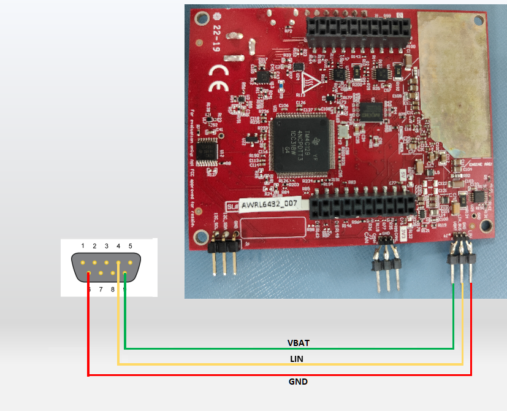
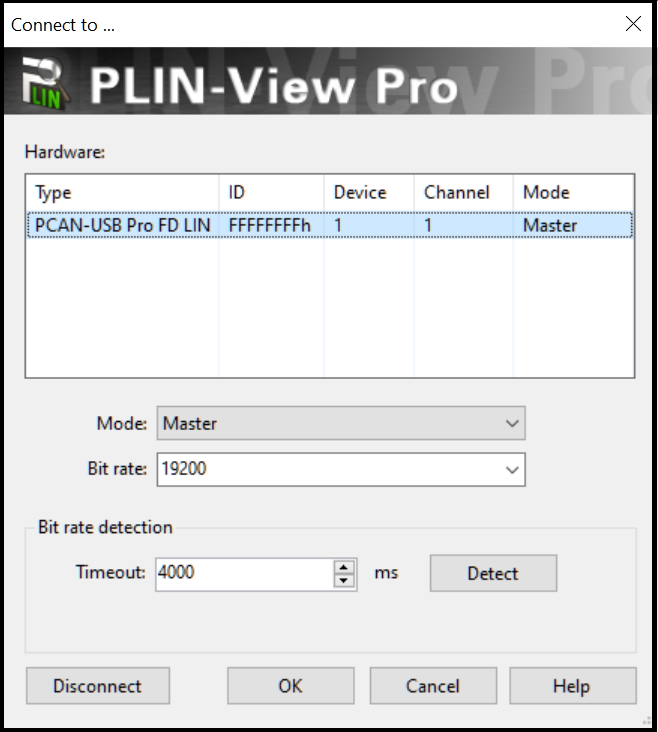
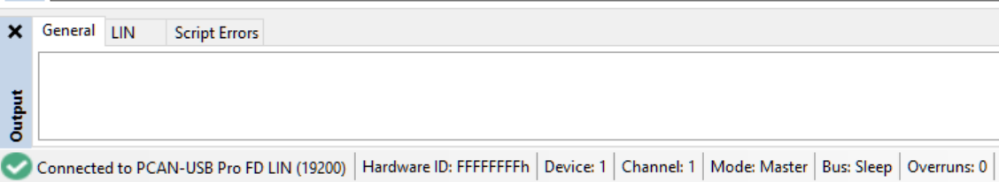
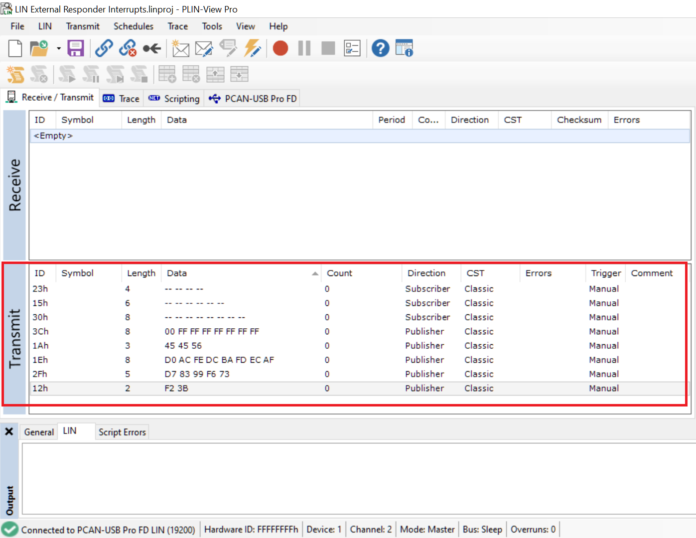
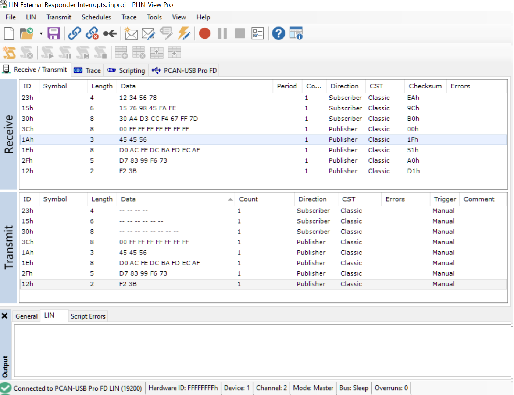

Introduction
This example application demonstrates the LIN message communication from external PC via PLIN-USB (from PEAK Systems -> IPEH-004052) using interrupts. Instance LIN1 is set in Responder Mode.
The PC via PLIN-USB initiates the transmission to the device, with the help of the PlinViewPro tool, by sending the LINID followed by the publisher or subscriber frames. A database consisting of which of the received ID's are to be responded to, received or ignored are maintained in the example application.
Supported Combinations
| Parameter | Value |
| CPU + OS | r5fss0-0 freertos |
| r5fss0-0 nortos |
| Toolchain | ti-arm-clang |
| Boards | xWRL6432-evm |
| Example folder | examples/drivers/lin/lin_external_responder_interrupts |
Using SDK with SysConfig
A GUI tool SysConfig is used to configure different modules and peripherals of the example. Using this tool, users can select and customize different modules and peripherals. The SysConfig tool will generate the code for initializing and configuring these modules. This configuration is saved to a file called example.syscfg for every example. To know more about how to use SDK with SysConfig, Visit this page
Using SDK with SysConfig
Steps to Run the Example
- Board Configuration, change the switch 3 on S4 to OFF mode . Switch 3 in S1 set to be ON.

LIN switch 3 on S4 set to OFF. Switch 3 in S1 set to be ON.
- Hardware Connectivity, connect the PLIN-USB module to PC from USB and Serial Port to be connected as mentioned in the image below.

LIN Hardware Connectivity with PLIN USB.
- Software Setup, Download and Install the PLIN-View Pro from https://www.peak-system.com/PLIN-USB.485.0.html?&L=1
- Click on LIN in the menu bar and connect to PLIN-USB. Make sure the LINMode for PLIN is Commander with Baud Rate of 19200.

LIN Hardware Connectivity with PLIN USB.
- After successful connection with PLIN-USB, the status of connection is shown at the bottom of the screen.

PLIN Connectivity status.
- Once connection is established, Create the subscriber and publisher frames in the Transmit section with the ID's and configurations as shown in the below image.

Commander Configurations.
- Now send the publisher or subscriber frames created above by selecting the same in the Transmit tab and pressing the space bar to send the frame to the xWRL6432-evm. The response messages will then be visible in the upper Receive section as shown in the output section(see Sample Output).
- When using CCS projects to build, import the CCS project for the required combination and build it using the CCS project menu (see Using SDK with CCS Projects).
- When using makefiles to build, note the required combination and build using make command (see Using SDK with Makefiles)
- Launch a CCS debug session and run the executable, see CCS Launch, Load and Run
See Also
LIN
Sample Output
Shown below is a sample output when the application is run,
[ LIN RESPONDER ] LIN External Responder Interrupts, application started ...
[ LIN RESPONDER ]
[ LIN RESPONDER ] Request 0x23h(ID) response frame sent 12 34 56 78
[ LIN RESPONDER ]
[ LIN RESPONDER ] Request 0x15h(ID) response frame sent 15 76 98 45 FA FE
[ LIN RESPONDER ]
[ LIN RESPONDER ] Request 0x30h(ID) response frame sent 30 A4 D3 CC F4 67 FF 7D
[ LIN RESPONDER ]
[ LIN RESPONDER ] New Frame Received 0x3C(ID) 00 FF FF FF FF FF FF 7D
[ LIN RESPONDER ] Sleep Frame Received. Going to sleep ...
[ LIN RESPONDER ]
[ LIN RESPONDER ] Wakeup detected. Lin now active.
[ LIN RESPONDER ] New Frame Received 0x1A(ID) 45 45 56
[ LIN RESPONDER ]
[ LIN RESPONDER ] New Frame Received 0x1E(ID) D0 AC FE DC BA FD FF FF
[ LIN RESPONDER ]
[ LIN RESPONDER ] New Frame Received 0x2F(ID) D7 83 99 F6 73
[ LIN RESPONDER ]
[ LIN RESPONDER ] New Frame Received 0x12(ID) F2 3B
[ LIN RESPONDER ]
[ LIN RESPONDER ] All tests have PASSED!!
Shown below is a sample output on PLIN-View Pro

Output on PLIN-View Pro
 1.8.20
1.8.20